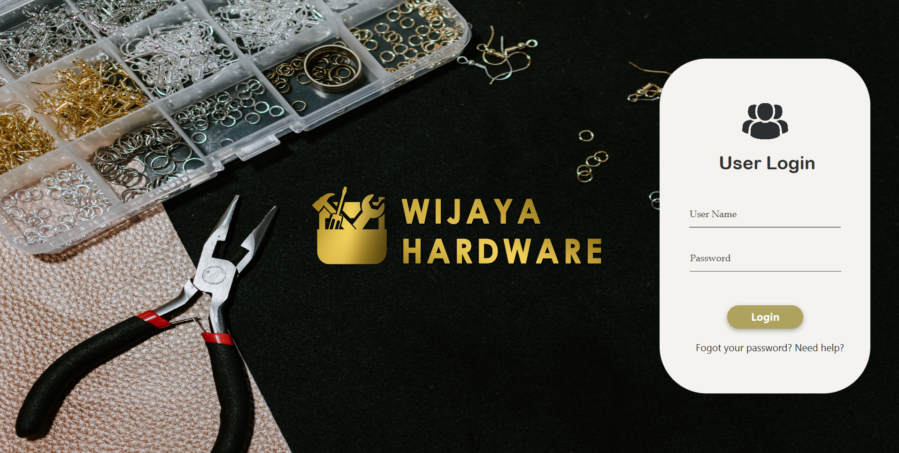
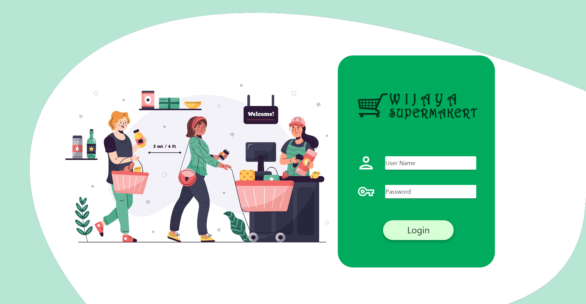

Hostel Management System
This project did for learning ORM Concepts.
Java, JavaFX, Intellij IDEA, and Scene
Builder these are the languages and
tools I used to create this
application. I learned so many things
and some mistakes but I think I did a
good job and I think this good experience
for me.
Hardware Management System.

I create a Standalone Software in my 1st
year 1st Semester Final Project.It’s a
Hardware Management System. We can
manage whole business process by this.Java,MySQL,
JavaFX, Intellij IDEA, Scene Builder, and
TIBCO Jaspersoft Studio these are the
languages and tools I used to create this
also use MVC Architecture.
SuperMarket Manage System.

This Project created for learning layeard
architecture .This is a standalone software
for manage Items in supermarket and can
print a bill and get a system report.Java,MySQL,
JavaFX,Intellij IDEA, Scene Builder,TIBCO
jaspersoft Studio these are the
languages and tools i used to create
this.
Live Chat System.
This Project is based on INP Course Work Chat-
Application-Using-Socket Programming.
I create a live chat application to chat
with users and send images. This is the
perfect experience for me and I learn to
work with the socket program java, I
used IntelliJ IDEA to code and scene
builder for designs.